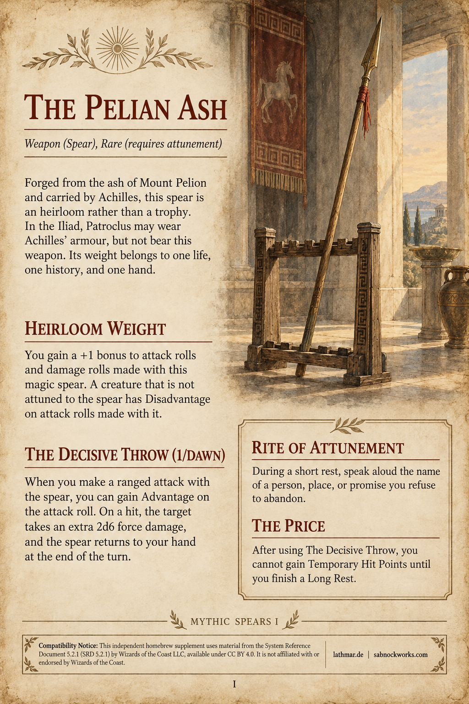
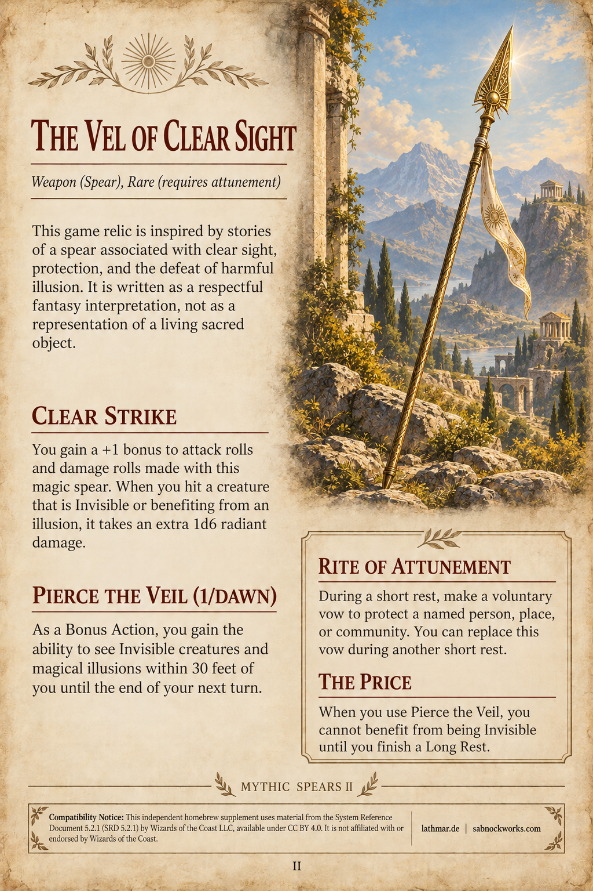
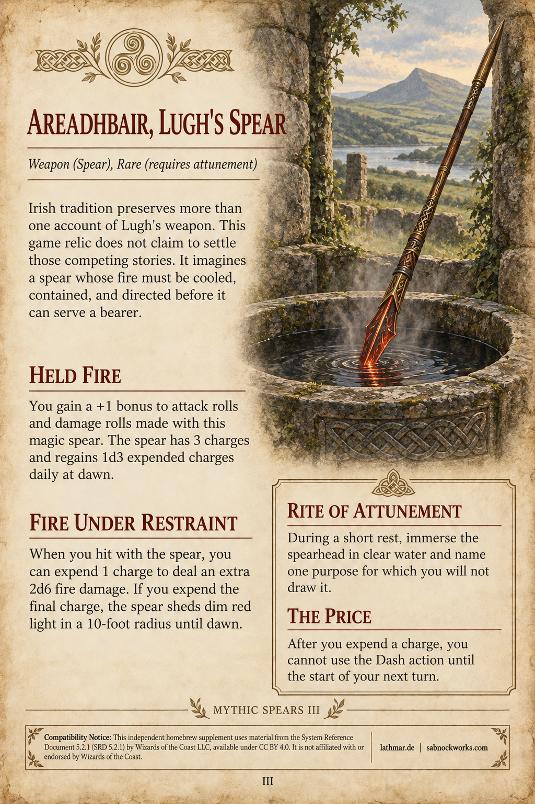
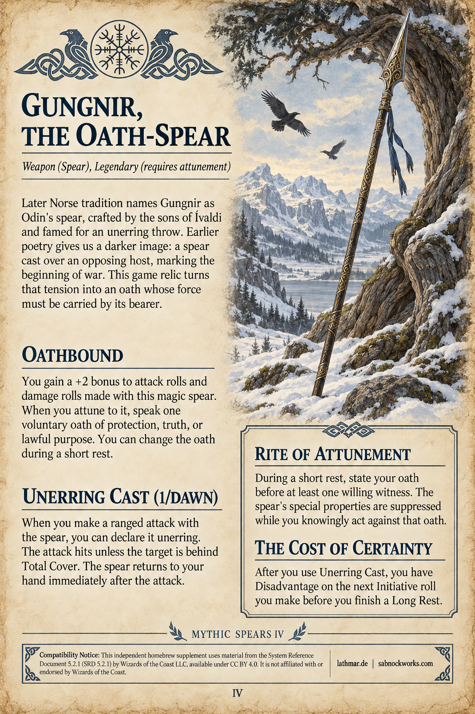
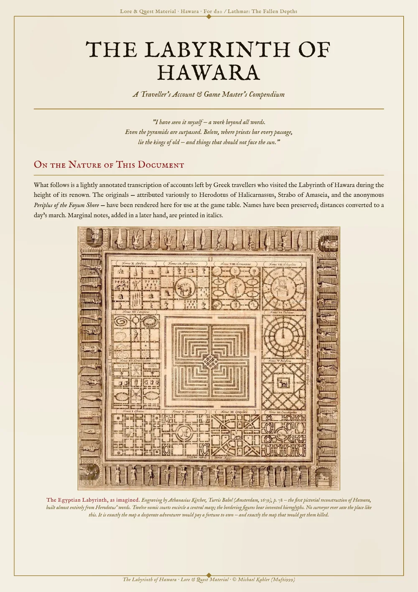
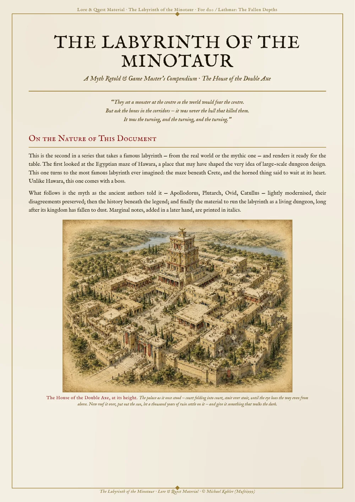
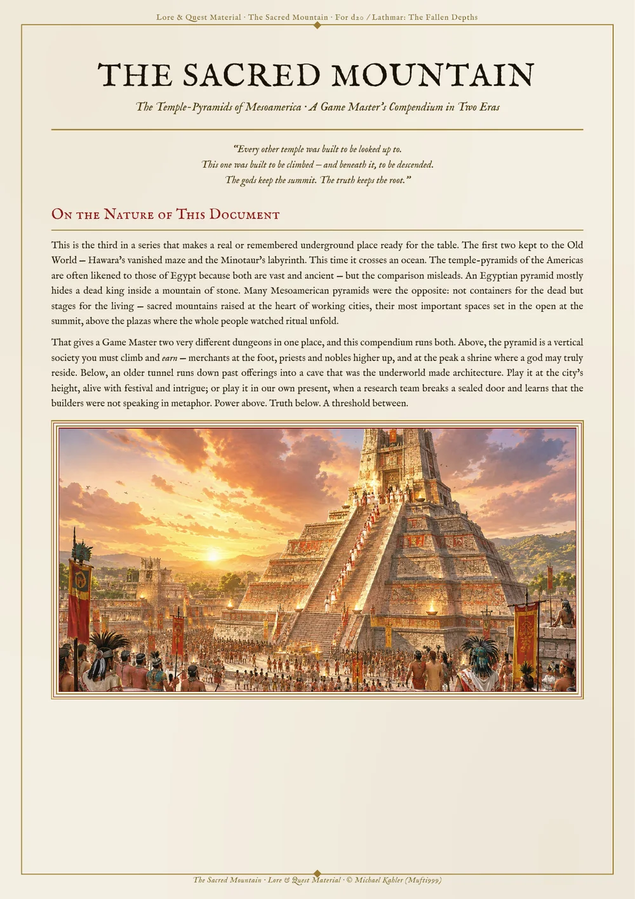
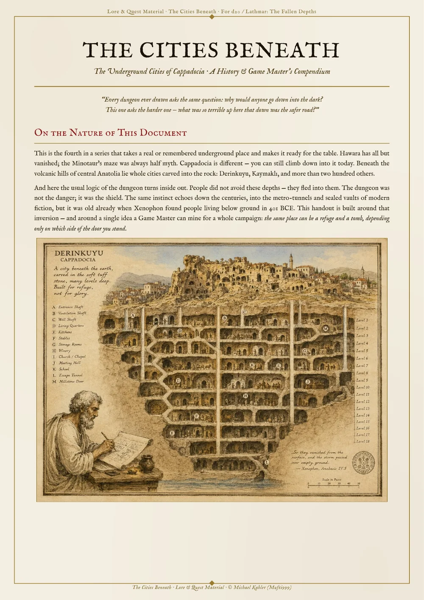
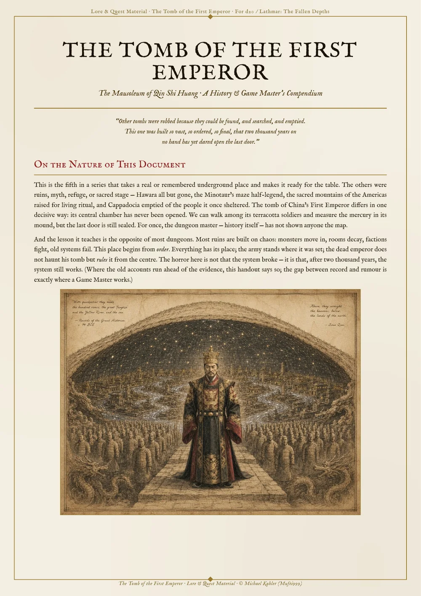

01

Mythic Spears I
The Pelian Ash
An heirloom spear inspired by Achilles' weapon: strong in the right hand, costly when its decisive throw is called upon.
The open drawer
Gameable relics, encounter tools, and rules fragments for tables that prefer a little history behind the magic.
Filed Under: Spears

Mythic Spears I
An heirloom spear inspired by Achilles' weapon: strong in the right hand, costly when its decisive throw is called upon.

Mythic Spears II
A spear of protection and clear sight, written as a respectful fantasy interpretation rather than a representation of a living sacred object.

Mythic Spears III
A weapon of contained fire whose charges reward purpose, restraint, and the patience to cool power before drawing it.

Mythic Spears IV
An oathbound spear for bearers who will accept certainty only at the price of being held to the promise they make.
Lore & Quest Material
Five journeys into real and remembered places where history, myth, refuge, ritual, and absolute order become material for the game table.

Ancient Mega-Dungeons I
A traveller's account of Egypt's vanished labyrinth, followed by expedition hooks, a dungeon campaign framework, and encounters for the deep levels.

Ancient Mega-Dungeons II
The Cretan myth retold beside its historical foundations, with reasons to enter, a runnable maze, rules for getting lost, and wandering encounters.

Ancient Mega-Dungeons III
A two-era compendium for climbing a living Mesoamerican temple-pyramid or descending beneath it, with ancient and modern hooks, dangers, and encounters.

Ancient Mega-Dungeons IV
Cappadocia's underground cities as refuge, machine, and dungeon, with historical context, campaign hooks, survival pressures, and deep-city encounters.

Ancient Mega-Dungeons V
The unopened mausoleum of Qin Shi Huang recast as a dungeon of perfect order, with historical context, rival expeditions, traps, hooks, and omens.
More material to come
Each entry remains a self-contained download, ready to bring to the table, annotate, or adapt for a different world.